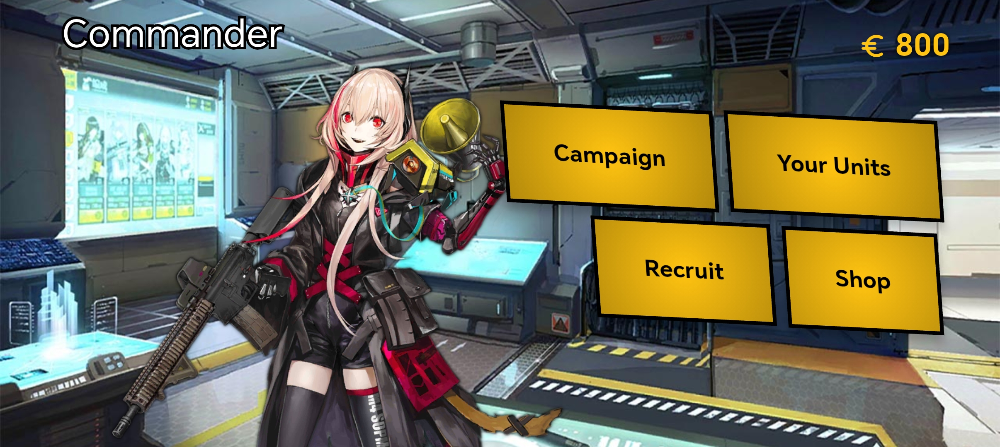

Grade: 19.5/20
Alpha Task Force is a hybrid tower defense and real-time tactics game made with Flutter in Android Studio as the final project for our Programming for Mobile course.
This game takes place in an alternate universe where Griffin & Kryuger created the Alpha Task Force, a squad of T-Dolls led by you, the Commander.
After reports of Sangvis Ferri, once thought to be destroyed, begin to spread, it's up to you and your squad to investigate their mysterious return and put an end to them.

For this game I designed the level mechanics of a hybrid Tower Defense and Real-Time Tactics game with this simple question as a foundation: "What if we made a tower defense game where we can reposition our units?"
I also programmed the random layout generator with incremental grid sizes with the help of generative AI tools, as well as the behavior of the units and enemies.
Next, I balanced the characters according to their roles and rarity.
Finally, I wrote the entire story and dialogue for this fangame.
This is a non-monetized gacha game that draws a lot of inspiration from other games in this genre for it's gacha system.
The hybrid design takes elements from both Tower Defense and Real-Time Tactics games and was inspired by Girls Frontline 2: Exilium, as well as Arknights.
Since this is a Girls' Frontline fangame, the aesthetics and color palettes of its UI/UX elements draw heavy inspiration from the original material.
Given that the unlockable characters are based on actual firearms, their attributes are based on their real-life counterparts.
Girls' Frontline is the property of MICA Team. This is a non-commercial fangame and is not affiliated with MICA Team in any way.
All characters, names and assets used in this fangame are also property of MICA Team.